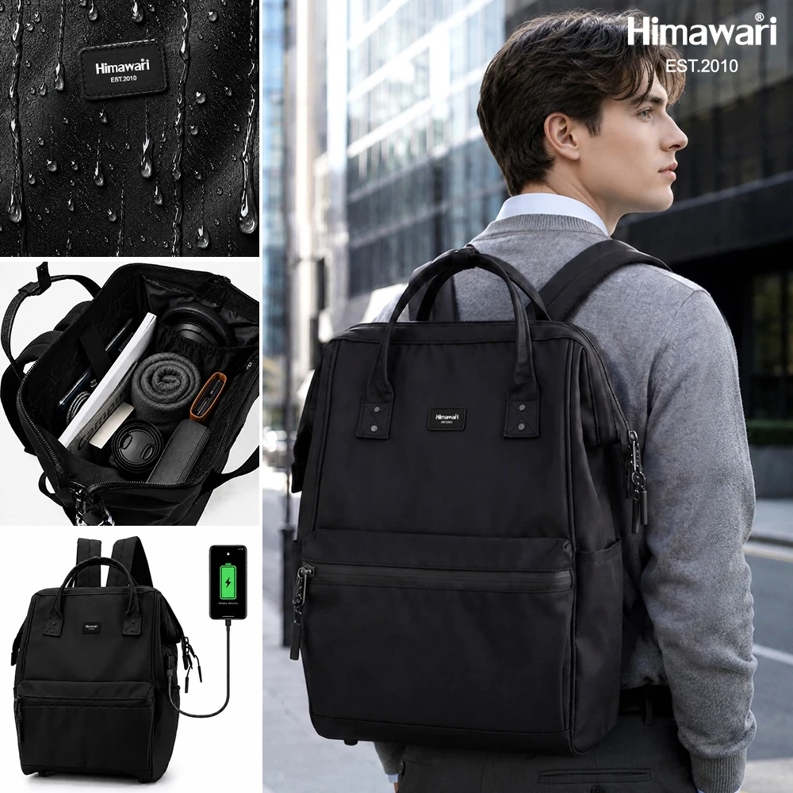
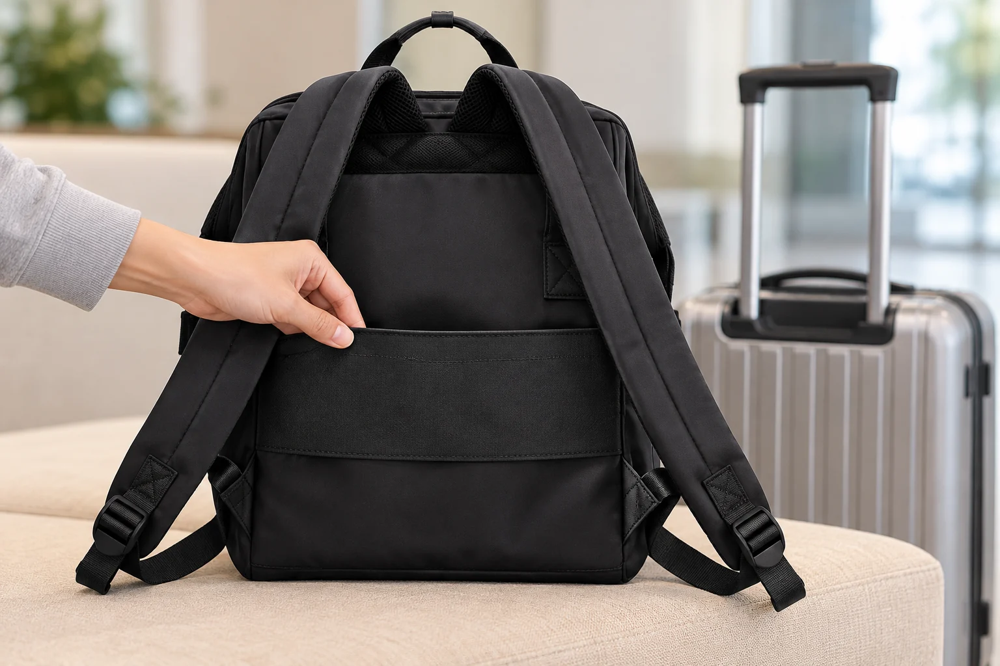

백팩 뒤의 캐리어 밴드, 손잡이에 끼우기 전에 볼 것
백팩을 캐리어 위에 올려두었는데 손잡이를 잡으려니 가방이 손등에 닿습니다. 위치를 조금 내리면 이번에는 어깨끈이 옆으로 길게 늘어집니다. 두 가방을 함께 쓸 때는 밴드가 있는지에 이어 내 캐리어의 손잡이가 그 밴드를 통과하는지, 짐을 담은 백팩이 어느 높이에 놓이는지를 봅니다.
히마와리 No.1884 블랙의 상세 사진에는 후면 캐리어 고정 밴드가 안내되어 있습니다. 백팩의 등판 쪽 밴드에 캐리어의 두 줄 손잡이를 통과시킨 모습도 보입니다. 이 사진은 어디에 끼우는 부품인지 이해하는 데 도움이 됩니다. 다만 사진 속 조합만으로 집에 있는 캐리어와도 맞는다고 정할 수는 없습니다. 실제로 함께 쓸 두 제품을 놓고 판단합니다.

위쪽 손잡이와 등판의 밴드를 구별합니다
캐리어에 끼울 곳을 찾을 때는 백팩을 뒤로 돌려 등판을 봅니다. 위쪽에서 손으로 잡는 운반용 손잡이, 어깨에 거는 쿠션 끈, 등판을 가로지르는 캐리어 밴드를 나누어 살펴보세요. 끈처럼 생겼다는 이유로 같은 역할을 맡기는 일을 줄일 수 있습니다. No.1884의 상세 이미지에서 POINT 06으로 소개한 부품이 후면 캐리어 고정 밴드입니다.
사진에서는 이 밴드 뒤로 캐리어의 뻗은 손잡이가 지나갑니다. 어깨끈 두 개에 캐리어 손잡이를 각각 거는 모습과는 다릅니다. 위쪽 운반용 손잡이에 억지로 끼우거나 조절 끈 끝을 묶어 비슷한 모양을 만들기 전에, 안내된 통과 위치를 먼저 맞춰봅니다. 밴드의 입구와 등판 사이에 실제로 어떤 공간이 있는지도 이때 살필 수 있습니다.
밴드만 가까이 보면 가방 전체의 방향을 놓치기 쉽습니다. 백팩 앞면은 어느 쪽을 향하고 어깨끈은 캐리어의 어느 면에 놓일지 함께 봅니다. 처음부터 방향을 정해두면 끼우는 도중에 가방을 돌리느라 밴드와 손잡이를 비틀 일이 줄어듭니다. 상세 사진은 이 위치 관계를 읽는 예시로 사용하면 됩니다.

손잡이가 지나가는 길은 가방의 가로와 다릅니다
No.1884의 제품 정보에 적힌 외부 크기는 가로 30 × 세로 45 × 폭 20cm입니다. 가방 전체가 어느 정도 자리를 차지하는지 비교할 수치는 되지만 가로 30cm를 밴드 안쪽 너비로 읽을 수는 없습니다. 확인한 상세 사진에는 밴드의 통과 폭이나 여유가 따로 표시되어 있지 않습니다. 캐리어의 크기 이름만으로 맞는 조합을 고르기도 어렵습니다.
실제로 끼울 때는 캐리어 손잡이의 맨 위 잡는 부분부터 봅니다. 밴드를 그 부분 너머로 내려야 한다면 손잡이 전체 너비와 두께가 지나갈 여유가 필요합니다. 그다음에는 두 줄 기둥이 벌어진 간격과 밴드가 놓일 높이를 살핍니다. 위쪽은 지나가는데 아래로 내리는 동안 걸리는지, 가방을 받친 상태에서 밴드가 과하게 당겨지는지 확인하는 순서입니다. 기둥 사이의 빈 간격만 재면 통과할 손잡이 바깥쪽을 빠뜨릴 수 있습니다.
처음 맞출 때는 캐리어를 멈춰 세우고 백팩을 손으로 받칩니다. 밴드가 걸리면 가방 무게로 눌러 밀어 넣지 말고 어느 부분이 닿았는지 봅니다. 손잡이의 모양 때문에 통과가 어려운지, 어깨끈이 함께 말려 들어갔는지에 따라 손댈 위치가 달라집니다. 끝까지 내려가기 어렵거나 빼낼 때 힘이 많이 든다면 그 조합을 그대로 사용하기보다 백팩을 따로 메는 편으로 준비할 수 있습니다.
짐을 넣으면 손이 닿는 높이도 다시 봅니다
빈 백팩이 손잡이에 끼워졌다면 실제 가져갈 짐을 담은 뒤 위치를 확인합니다. 몸판이 부풀었을 때 캐리어 위에 놓이는 모양과 손잡이 주변 여유를 보는 과정입니다. 밴드만 통과하면 확인이 끝난다고 생각하기 쉽지만 이동할 때는 손으로 손잡이를 잡아야 합니다. 평소 잡는 자리에서 손등과 가방이 닿는지, 손잡이의 수납 버튼을 가리거나 누르는 부분이 없는지 살펴보세요.
백팩을 아래로 더 내리면 해결될 듯해도 가방 바닥과 끈의 위치가 달라집니다. 어깨끈 전체와 아래쪽 조절 끈 끝이 바퀴 가까이 내려오거나 캐리어 옆으로 늘어지지 않는지 봅니다. 끈을 지퍼 손잡이나 밴드에 임의로 묶어 고정하기 전에, 원래의 착용 상태를 유지하면서 가방 가까이 둘 수 있는 위치를 찾습니다. 짐을 더하거나 꺼낸 뒤에도 그 위치가 유지되는지 확인할 수 있습니다.
손잡이를 잡고 짧게 움직여 볼 때에도 백팩의 현재 위치를 봅니다. 가방이 한쪽으로 돌아가거나 손잡이를 잡는 동작이 불편하다면 멈춰서 다시 받칩니다. 사진의 반듯한 장착 모습은 이동 중의 흔들림이나 적재 한도를 확인한 결과가 아닙니다. 밴드가 끼워졌다는 이유로 어떤 짐과 어떤 이동에서도 안정적이라고 기대하지 않고 이번 구성에서 직접 다룰 수 있는지를 판단합니다.
분리해서 다시 멜 때까지가 한 번의 사용입니다
계단처럼 두 짐을 따로 들어야 하는 구간이 있다면 캐리어에 끼우기 전에 분리할 순서도 생각해둡니다. 백팩을 받친 상태에서 손잡이를 밴드 밖으로 빼고 어깨끈에 다른 끈이 겹쳤는지 살핀 뒤 다시 멥니다. 밴드만 잡고 백팩을 위로 잡아당기거나 백팩의 손잡이로 캐리어까지 함께 들어 올리는 방식은 사용 동작으로 삼지 않습니다. 캐리어는 해당 제품에서 안내한 운반용 손잡이와 방식으로 따로 옮깁니다.
분리할 때 손잡이가 밴드에 걸리면 가방을 받쳐 힘을 덜고 닿은 위치를 확인합니다. 급히 내려야 하는 순간에 처음 빼보는 것보다 출발 전에 끼우고 빼는 동작을 한 번 이어보는 편이 낫습니다. 끼울 때는 괜찮았는데 뺄 때 잡을 곳이 부족하다면, 그 불편도 호환 여부를 판단할 조건에 포함됩니다. 장착된 모습만으로는 알기 어려운 부분입니다.
다시 멜 때는 캐리어 곁에 모아두었던 어깨끈을 펼치고 평소 맞춘 길이가 바뀌지 않았는지 봅니다. 캐리어에 올리려고 끈 길이를 바꿨다면 멘 상태에서 다시 맞춥니다. No.1884의 밴드를 고를 때는 실제 캐리어 손잡이가 통과하는지, 짐을 넣은 상태에서 손으로 다룰 수 있는지, 필요할 때 무리 없이 분리할 수 있는지를 봅니다. 내가 쓸 조합으로 이 흐름이 이어지면 밴드를 사용할 장면도 구체적으로 정해집니다.